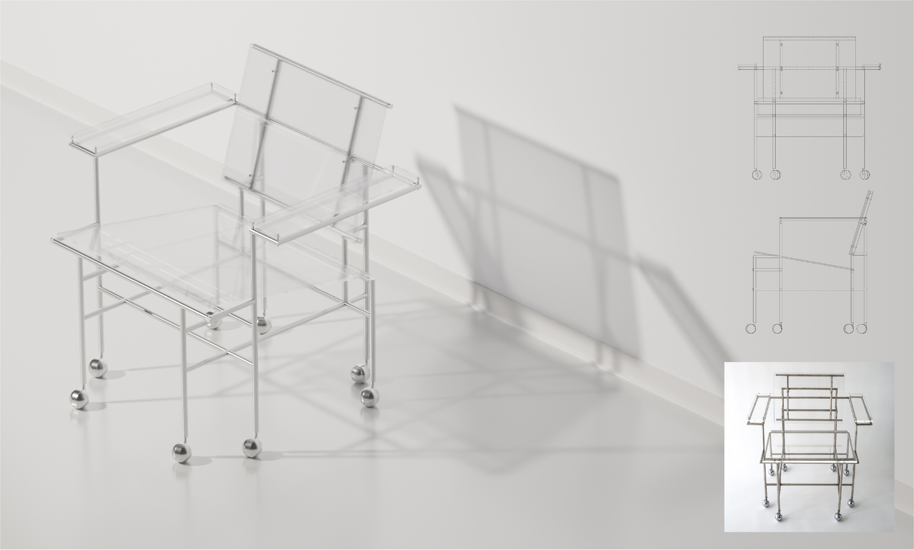
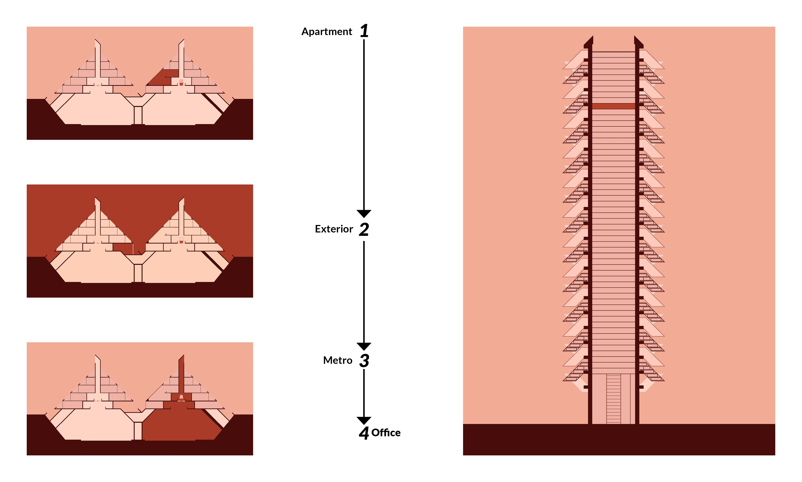

LOM-X-R
*A virtual reality experience of the unbuilt Lower Manhattan Expressway*
You wake up amongst the surreal beauty of a mid-century modernist's dream: the Lower Manhattan Expressway.
You are the descendant of Paul Rudolph - the architect himself - still entrusted with the upkeep of the LOMEX.
Recently there have been calls for demolishion of the LOMEX, you are tasked with finding a way to stop the city of New York from going through with it.
Your family name is on the line, better get to work.
1 / 8

Axonometric of LOMEX in the site
[Illustrator, Rhinoceros]
2 / 8
Paul Rudolph chair immersion asset
[Blender]
3 / 8

Sections describing experience sequence
[Illustrator, Rhinoceros]
4 / 8
Central pedestrian walkway
[Unity]
5 / 8
Bedroom of 2-story unit - inspired by the Green Residence
[Unity]
6 / 8
Living space of 2-story unit - inspired by the Green Residence and Paul Rudolph's apartment
[Unity]
7 / 8
People-movers located in apartment block, above a sunken highway
[Unity]
8 / 8
Office near the hub of the Lower Manhattan Expressway
[Unity]